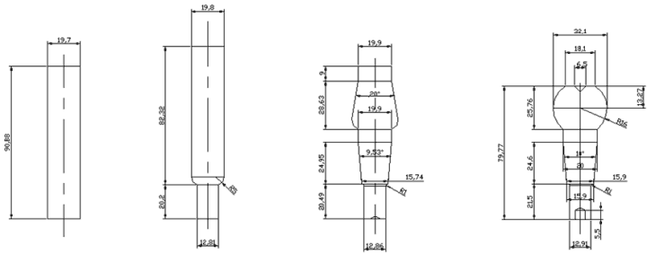
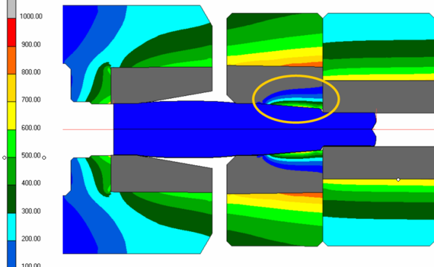
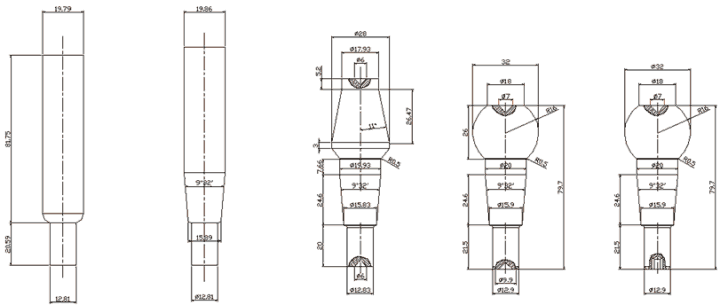
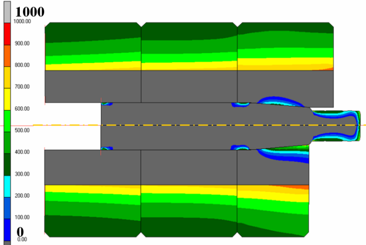
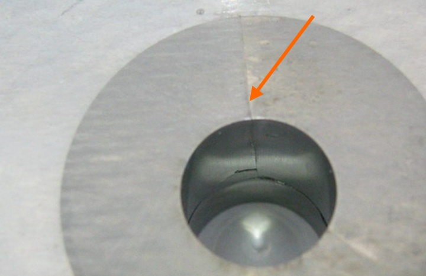

|
Dövme istasyon tasarýmlarý Þekil 10'da gösterilen Ø12.9 Rotilin üretiminde, konik açýnýn yüksek olmasý sebebiyle þekillendirme sýrasýnda kalýp sorunu yaþanabileceði öngörülmüþtür. Olasý problemlerin önceden tespit edilebilmesi için bilgisayar analizleri ile dövme iþlemi simüle edilmiþtir. Öncelikle istasyon tasarýmý yapýlarak malzeme akýþý incelenmiþ daha sonra kritik istasyonlar olan 2. ve 3. istasyonlarda kalýp analizleri gerçekleþtirilmiþtir.

Þekil 10 - Soðuk dövme istasyon þekilleri
2. istasyonda gerçekleþtirilen konik ekstrüzyon ile kafa hazýrlýk iþlemi deforme olabilen kalýplar ile modellenerek incelenmiþtir. Bu istasyonda ekstrüde edilen parça öncelikle konik kýsýmda akmaya baþlamakta ve daha sonra kafa hazýrlýk formu oluþturulmaktadýr. Fakat konik bölgenin tam olarak dolduðu aþamada kalýp iç yüzeyine yüksek basýnç etki etmektedir. Bu da eksenel çekme gerilmelerinin oluþmasýna sebep olmaktadýr (Þekil 11). 3. istasyondaki durumdan farklý olarak istenmeyen gerilme daðýlýmý dövme iþleminin ortasýnda oluþmakta ve prosesin sonuna kadar devam etmektedir. Bu durum 2. istasyon kalýplarýnýn düþük adetlerde kýrýlmasýna yol açacak ve kalýp sarfiyatýný arttýracaktýr. Analitik çözümleme yöntemleri ile kovana çakma ve çift sýkýþtýrma çemberi uygulama yöntemleri de incelenmiþ fakat çekme gerilmelerinin ortadan kaldýrýlamayacaðý tespit edilmiþtir.

Þekil 11 - 2. istasyon kalýplarýnda açýsal gerilme daðýlýmý
2. istasyona düþen yükü azaltmak amacýyla, kafa bölgesindeki þiþirme iþleminin kaldýrýldýðý yeni bir istasyon dövme sýrasý tasarlanmýþtýr (Þekil 12). Ancak yapýlan kalýp analizleri kalýp çekirdeðinde çekme gerilmelerinin yok edilemediðini göstermiþtir.


Þekil 12 - 2. istasyon þekli deðiþtirilen dövme adýmlarý ve 2. istasyon kalýplarýnda açýsal gerilmeler (MPa)
Bu sonuç üzerine üretimde kullanýlmak üzere yurtdýþýndan yüksek basýnca dayanýklý, ileri teknoloji ürünü kalýplar getirtilmiþtir. Analiz sonuçlarýný saðlamak amacýyla da firmamýz içerisinde kýrýlmasý beklenen kalýplar üretilmiþ ve üretim sýrasýnda denenmiþlerdir. Kalýplar 1300 üretim adedinde, öngörüldüðü þekilde kýrýlmýþtýr (Þekil 13).

Þekil 13 - Kýrýlan 2. istasyon kalýbý
3. Sonuçlar
Metal þekillendirme simülasyonlarý malzeme akýþýnýn yaný sýra, dövme kalýplarýndaki gerilmeleri hesaplayabilmeleri nedeniyle firmalara önemli kazançlar saðlar. Ancak analizlerin doðru sonuç vermesi, doðru malzeme karakteristiklerinin elde edilmesi, kalýplarýn teknik resimlere uygun yapýlmasý ve kalýp sýký geçme modellemesinin doðru tekniklerle yapýlmasýna baðlýdýr. Sýký geçmenin doðru modellenmesi ile, kalýp hasarlarý önceden tahmin edilebilir ve iyileþtirme önerileri bilgisayar ortamýnda denenebilir.
4. Referanslar
[1] Önder C.: "Analysis of Bolt Production by Metal Forming"; Yüksek lisans tezi; Ortadoðu Teknik Üniversitesi, Ankara, 2004
[2] MSC. SuperForm Command Reference, 2004
[3] "Kalýp Gerilme Analizlerinin Sonlu Elemanlar Yöntemi Kullanýlarak Yapýlan Soðuk Dövme Simülasyonlarýna Uyarlanmasý"; Aygen M.; Önder, C.;MSC. Software Kullanýcý Konferansý; Haziran 2006.
[4] Lange, K.: "Handbook of Metal Forming"; Society of Manufacturing Engineers; 1985
|